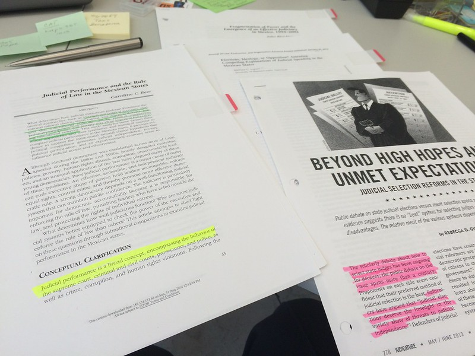

- Time Required
- 7–8 hours, including reading time
This week, we finish up the bulk of our work on secondary and primary research for the recommendation report. After this module, you should have all the information you need (more or less), your finished Design Description, and your finished Instructions.
Connections to the Recommendation Report
The primary and secondary research you conduct will support your report in these ways:
- The research will be used throughout your report, as appropriate to explain and support your recommendation.
- The Design Description will explain a design concept in the Methods section of your report.
- The Instructions will be described in the Methods section of your Recommendation Report, to explain your analysis process.
- The Instructions will be included as an Appendix in your Recommendation Report.
What You Will Learn & Practice
- How to analyze your audience and purpose so that you can choose supporting material that is convincing to your readers and decide the best way to present information clearly and effectively. [CLO 1]
- How to find and evaluate ethical evidence in secondary sources, such as books, articles, podcasts, and videos, and through primary research, such as observation, inspection, experiment, and interview,that supports your position. [CLOs 2 & 3]
- How to write documents you may encounter in the workplace, such as letters, memos, instructions, proposals, reports, and presentations. [CLO 4]
- Collaborate with classmates in planning, researching, writing, revising, and presenting information. [CLO 5]
- How to use colors, layout, and formatting that make your documents understandable and easy to read and how to take advantage of design principles, including contrast, repetition, alignment, and proximity, to communicate your ideas effectively. [CLO 6]
Activities to Complete
Due Dates
- Work with no grace period:
- All other work is due by 11:59 PM on Friday, February 25, 2022.
- Grace Period:
- Ends at 11:59 PM on Wednesday, March 2 for your Work Log.
- Ends at 11:59 PM on Friday, April 29 for the rest of the week’s relevant work.
📚 To Read This Week
📝 To Write This Week
💬 To Discuss This Week
- Check in with your Accountability Group, according to the agreement that you have made.
- Be sure that group members understand that Feedback Discussions have no grace period.
- Remind your group that Work Logs have a 5-day grace period and must be submitted by March 2.
- Post any questions you have about the course projects below (optional). You can also check these Discussions for answers.
- Questions about the Design Description
- Questions about the Instructions
- Questions about the Recommendation Report
- Complete your participation in the Feedback Discussions from last week:
Instructions Feedback Discussion
Second-Chance Feedback Discussion
- If you needed more time to write your Instructions draft, follow the directions in the Second-Chance Instructions Feedback Discussion.
- After peer review partners are assigned (Thursday, February 24), read drafts from your classmates and offer feedback on how to revise. Feedback is due by 11:59 PM on Monday, February 28.
📓 To Track This Week
Photo credit: Research process by Raul Pacheco-Vega on Flickr, used under a CC-BY-NC-ND 2.0 license.